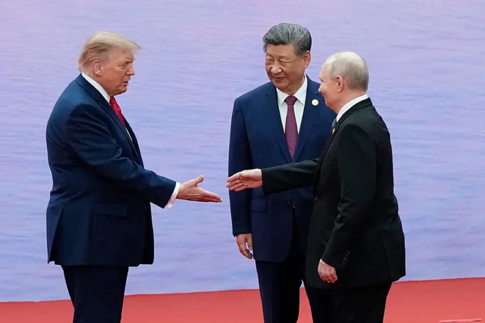

Tarihî Zirve Efsanesi Karşısında Şıncın Gerçekleri
Uluslararası ilişkilerde ve diplomasi kulislerinde liderlerin bir araya geldiği her buluşmayı derhal tarihî bir dönüm noktası veya yeni bir Yalta ilan etmek medyanın en sevdiği alışkanlıklardan biridir. Şıncın‘da…

Çin-Rusya-ABD Devlet Başkanları Barış Bildirisi
Çin Halk Cumhuriyeti Cumhurbaşkanı Şi Cinping, Rusya Federasyonu Cumhurbaşkanı Vladimir Putin ve Amerika Birleşik Devletleri Başkanı Donald J. Trump, 19 Kasım 2026 tarihinde Şıncın’da bir araya geldi. Rusya ve ABD devlet başkanları, bu tarihî üçlü zirveye ev sahipliği yaptığı için Çin’e teşekkürlerini ilettiler. Üç devlet başkanı, mevcut uluslararası durum hakkında derinlemesine görüş alışverişinde bulundular ve stratejik istikrarı ve uluslararası güvenliği korumaya kararlı olduklarını ifade ettiler.
1. Birleşmiş Milletler Güvenlik Konseyi’nin daimî üyeleri olarak Çin, Rusya ve ABD, BM’nin küresel zorluklara daha etkili bir şekilde yanıt verebilmesi ve uluslararası barış ve güvenlik konusundaki temel misyonuna uygun hareket edebilmesi için BM’yi reformdan geçirme taahhüdünde bulundular.
2. Üç ülke, tüm ulusların yararına rafine petrol ürünlerinin üretimini ve tedarikini artırmayı planlamaktadır. Liderler, istikrarlı enerji akışının önemini yeniden teyit ettiler.
3. Üç devlet başkanı, devlet rızası ilkesinin ve devlet görevlilerinin dokunulmazlıklarına saygı gösterilmesinin son derece önemli olduğunu kabul ettiler ve Uluslararası Ceza Mahkemesi ile diğer benzer kurumların yetki alanlarını kötüye kullanmaması gerektiği konusunda mutabık kaldılar.
4. Üç devlet başkanı, nükleer savaşın kazanılamayacağını ve asla yapılmaması gerektiğini yeniden teyit ettiler. Üç ülke, nükleer risklerin azaltılması ve nükleer silahların yayılmasının önlenmesi konusunda bir diyalog yürüteceklerdir.
Uluslararası ilişkilerde ve diplomasi kulislerinde liderlerin bir araya geldiği her buluşmayı derhal tarihî bir dönüm noktası veya yeni bir Yalta ilan etmek medyanın en sevdiği alışkanlıklardan biridir. Şıncın‘da gerçekleşen Trump, Şi ve Putin temasını da aynı heyecan dalgasıyla karşılayanları görüyoruz. Oysa diplomasi literatürüne ve sahadaki sert güç dengelerine soğukkanlı bir gözle baktığımızda karşımızdaki tablonun bambaşka dinamikler barındırdığını tespit etmek zorundayız.
Öncelikle kavramsal çerçeveyi doğru oturtmak gerekir. Winston Churchill‘in 1950 yılında literatüre kazandırdığı “zirve’ kavramı, devlet başkanlarının yüksek politika konularını doğrudan ele aldığı özel durumları tarif eder. Fakat Şıncın‘daki buluşma bağımsız, özel amaçlı bir zirveden ziyade APEC toplantısının marjında gerçekleştirilen üst düzey bir üçlü görüşmedir. Diplomatik teamüller açısından bu ayrım hayatî önemdedir; çünkü organizasyonun formatı bile tarafların beklenti çıtasını ne kadar temkinli tuttuğunu açıkça göstermektedir. Nitekim Çin resmî medyasının “üçlü zirve” kavramını dahi kullanmayıp sadece ikili görüşmeleri öne çıkarması bu mesafeli tutumun en somut yansımasıdır.
Masadaki en kritik başlık nükleer silahların kontrolü ve stratejik dengedir. ABD ile Rusya arasındaki ikili nükleer silah kontrol mimarisinin süresi Şubat ayında dolmuş durumdadır ve Vaşington yönetimi Çin‘i de içine alan üçlü bir çerçeve aramaktadır. Fakat Pekin yönetiminin nükleer cephaneliğini kısıtlayacak böylesi bir adıma yanaşması mevcut denklemde beklenemez. Çin‘in yaklaşık 600 nükleer başlığı varken ABD ve Rusya‘nın her birinin elinde 5 binden fazla başlık bulunmaktadır. Aradaki devasa asimetri ortadayken Çin‘in kendisini bağlayacak bir taahhüde girmesini beklemek diplomatik gerçeklikle örtüşmez.
Diğer taraftan bölgesel krizler ve özellikle İran başlığı da liderlerin ajandasında önemli yer tutmaktadır. Trump yönetimi içerideki siyasî baskıların ve partisine seçim kaybettiren dinamiklerin ardından dış politikada sansasyonel bir başarı yakalamak, İran meselesini kendi şartlarıyla sınırlandırmak istemektedir. Fakat Rusya ve Çin‘in Tahran ile geliştirdiği stratejik ilişkiler ve Ortadoğu‘daki kendi öncelikleri masada tek taraflı bir uzlaşının önündeki en büyük engeldir.
Buluşmanın en dikkat çekici gerilim hattı ise Ukrayna dosyasında yaşanmaktadır. Vaşington yönetimi Ukrayna başlığını bu üçlü masanın gündemine almamakta ısrar etmiş, Çin‘i bu dosyanın doğrudan bir parçası olarak görmeyerek süreci ayrı tutmuştur. Putin‘in bu platformu Ukrayna Savaşı’nı kendi lehine sonuçlandıracak bir diplomatik kaldıraca dönüştürme arayışı bu nedenle üçlü oturumda karşılık bulmamıştır.
Peki, bu buluşmayı 1945 Yalta Konferansı ile kıyaslayan yaklaşımlar ne derece gerçeği yansıtmaktadır? Net cevap, “yansıtmamaktadır”. Yalta‘da savaşla yıkılmış bir dünyayı kendi aralarında paylaşan rakipsiz süper güçler vardı. Bugün ise Avrupa Birliği‘nin güvenlik kaygıları, Hindistan‘ın yükselişi ve şekillenen çok kutuplu ve birbirine bağımlı bir küresel düzen mevcuttur. Dolayısıyla büyük güçlerin küçük ülkelerin kaderini kapalı kapılar ardında belirlediği klasik bir Yalta düzeninin yeniden kurulması zaten teknik olarak mümkün değildir.
Bütün bu tablonun bize gösterdiği yalın gerçek şudur: Şıncın‘daki temas somut bağlayıcı anlaşmalar veya yeni bir dünya mimarisi doğurmamıştır. Fakat masadaki aktörlerin elde ettiği pragmatik kazanımlar da yabana atılamaz. Batı tarafından diplomatik olarak izole edilmeye çalışılan Putin, ABD ve Çin liderleriyle aynı kareye girerek tecridi kırmış ve uluslararası meşruiyetini perçinlemiştir. Şi, ev sahibi olarak küresel dengeleyici profilini pekiştirirken Trump ise lider diplomasisi üzerinden içerideki sıkışmışlığını aşacak bir vitrin yakalamıştır.
Özetle söylemek gerekirse, bu buluşmadan dünyayı baştan aşağı değiştirecek tarihî bir sonuç veya bağlayıcı kararlar beklemek hayalcilik olur. Masadaki temel kazanım, üç nükleer devin kriz anlarında kontrolden çıkabilecek gerilimleri yatıştırmak adına bir araya gelmiş olması ve dünyaya diyalog görüntüsü vermesidir. Dolayısıyla asıl izlenmesi gereken husus imzalanan metinler değil, kriz anlarında bu liderlerin birbirleriyle doğrudan konuşma hattını canlı tutup tutamayacağıdır.